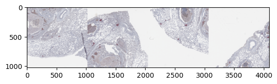

Integration of ZarrDataset with Tensorflow Datasets
import zarrdataset as zds
import tensorflow as tf
WARNING:root:PyTorch is not installed, the BaseZarrDataset class will still work as a python iterator
# These are images from the Image Data Resource (IDR)
# https://idr.openmicroscopy.org/ that are publicly available and were
# converted to the OME-NGFF (Zarr) format by the OME group. More examples
# can be found at Public OME-Zarr data (Nov. 2020)
# https://www.openmicroscopy.org/2020/11/04/zarr-data.html
filenames = [
"https://uk1s3.embassy.ebi.ac.uk/idr/zarr/v0.4/idr0073A/9798462.zarr"
]
import random
import numpy as np
# For reproducibility
np.random.seed(478963)
random.seed(478965)
Extracting patches of size 1024x1024 pixels from a Whole Slide Image (WSI)
Sample the image randomly using a Blue Noise sampling.
patch_size = dict(Y=1024, X=1024)
patch_sampler = zds.BlueNoisePatchSampler(patch_size=patch_size)
Create a dataset from the list of filenames. All those files should be stored within their respective group “0”.
Also, specify that the axes order in the image is Time-Channel-Depth-Height-Width (TCZYX), so the data can be handled correctly
image_specs = zds.ImagesDatasetSpecs(
filenames=filenames,
data_group="3",
source_axes="TCZYX",
)
# A list with a labeled image, for the single image in the dataset, is passed as `filenames` argument.
labels_specs = zds.LabelsDatasetSpecs(
filenames=[np.ones(1)],
source_axes="L",
)
my_dataset = zds.ZarrDataset([image_specs, labels_specs],
patch_sampler=patch_sampler,
shuffle=True)
Create a Tensoflow Dataset from the ZarrDataset object
When PyTorch is not present in the system, ZarrDataset will still work as a python generator.
This makes it easy to connect ZarrDataset with tensorflow.data.Dataset and create an iterable dataset.
my_dataloader = tf.data.Dataset.from_generator(
my_dataset.__iter__,
output_signature=(tf.TensorSpec(shape=(1, 3, 1, None, None),
dtype=tf.float32),
tf.TensorSpec(shape=(1,),
dtype=tf.int64)))
batched_dataset = my_dataloader.batch(4)
This data loader can be used within Tensorflow training pipelines.
samples = []
for i, (sample, target) in enumerate(my_dataloader):
samples.append(np.moveaxis(sample[0, :, 0], 0, -1))
print(f"Sample {i+1} with size {sample.shape}, and target {target}")
if i >= 4:
# Take only five samples for illustration purposes
break
samples_stack = np.hstack(samples)
C:\Users\cervaf\Documents\Apps\miniconda3\envs\zds-tf\lib\site-packages\boto3\compat.py:82: PythonDeprecationWarning: Boto3 will no longer support Python 3.7 starting December 13, 2023. To continue receiving service updates, bug fixes, and security updates please upgrade to Python 3.8 or later. More information can be found here: https://aws.amazon.com/blogs/developer/python-support-policy-updates-for-aws-sdks-and-tools/
warnings.warn(warning, PythonDeprecationWarning)
Sample 1 with size (1, 3, 1, 1024, 1024), and target [1]
Sample 2 with size (1, 3, 1, 1024, 1024), and target [1]
Sample 3 with size (1, 3, 1, 1024, 1024), and target [1]
Sample 4 with size (1, 3, 1, 1024, 1024), and target [1]
samples_stack.shape
(1024, 4096, 3)
import matplotlib.pyplot as plt
plt.imshow(samples_stack.astype(np.uint8))
plt.show()
